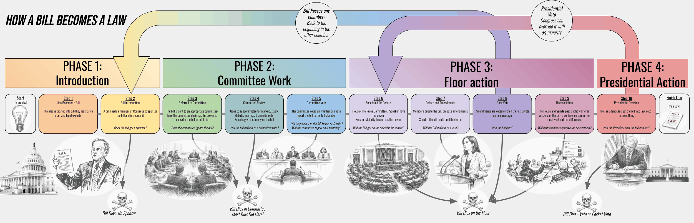

Previous
Next step
See the whole flow
Back to the start
Drag the diagram to pan. Arrow keys work too.

The diagram image did not load. Make sure bill-to-law-diagram.png sits in the same folder as this page.
×
Previous
Next step
Close